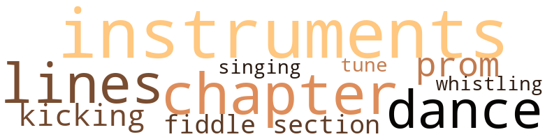
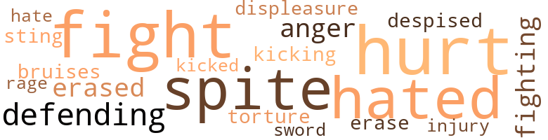
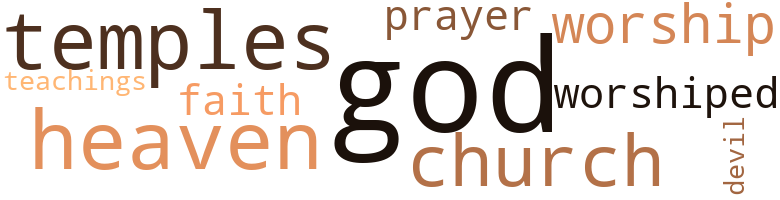

Little White Shoes, by Moore, Marie Eslanda (1975)
16 music-related terms matched in this text.
Most frequent terms in this topic: instruments (3); lines (2); chapter (2); prom (1); kicking (1)
chapter.n.01
Definition: a subdivision of a written work; usually numbered and titled
| word | sentence |
|---|---|
| chapter | I read the chapter : " Painful Men - struation . " |
| chapter | I turned the pages slowly until a chapter entitled , " Abnormalities in Women " confronted me accusingly . |
dance.n.01
Definition: an artistic form of nonverbal communication
| word | sentence |
|---|---|
| dance | " I met Laura one night at a dance , right after my boat docked . |
| dances | At first , we were just pals , taking in all the dances and shows together . |
kick.v.04
Definition: kick a leg up
| word | sentence |
|---|---|
| kicking | I could feel life moving and kicking inside of me and , at times , I became frightened at the thought of labor and delivery . |
musical_instrument.n.01
Definition: any of various devices or contrivances that can be used to produce musical tones or sounds
| word | sentence |
|---|---|
| instruments | Dr. Westly placed his instruments into his bag and prepared to leave the room . |
| instruments | Placing his instruments back into his bag , he said to my mother , " When it 's all over , bring her to see me , Sadie . |
| instruments | " Thank you , doctor , " I said , and proceeded with my tray of surgical instruments . |
promenade.n.01
Definition: a formal ball held for a school class toward the end of the academic year
| word | sentence |
|---|---|
| prom | The only thing I could hear from the time he took me to the senior prom was , " Keith Westly is a wonderful boy , lie 's more in your class . " |
section.n.01
Definition: a self-contained part of a larger composition (written or musical)
| word | sentence |
|---|---|
| section | Lakewood Sanitarium was a clean , quiet , and restful little hospital located in a beautiful section of the small village . |
singing.n.01
Definition: the act of singing vocal music
| word | sentence |
|---|---|
| singing | Unconsciously I found myself singing and feeling very good as I walked toward the nurses home . |
tune.n.01
Definition: a succession of notes forming a distinctive sequence
| word | sentence |
|---|---|
| lines | He squinted his eyes from the smoke of the cigarette and tiny lines appeared at their corners ; these lines added something to him . |
| lines | They made him attractive and I got the impression that he had not always looked so sad - maybe he got those lines from laughing a great deal . |
| tune | In the distance , I could hear him whistling a gay tune . |
violin.n.01
Definition: bowed stringed instrument that is the highest member of the violin family; this instrument has four strings and a hollow body and an unfretted fingerboard and is played with a bow
| word | sentence |
|---|---|
| fiddle | You would n't have to give up your first love , I 'm willing to play second fiddle , " he smiled a little . |
whistle.v.01
Definition: make whistling sounds
| word | sentence |
|---|---|
| whistling | In the distance , I could hear him whistling a gay tune . |
48 violence-related terms matched in this text.
Most frequent terms in this topic: hurt (8); hated (6); spite (6); fight (5); defending (3)
anger.n.01
Definition: a strong emotion; a feeling that is oriented toward some real or supposed grievance
| word | sentence |
|---|---|
| anger | There were times when she became enraged , and her beady black eyes flashed with anger . |
| anger | His little face twisted in anger and his lips protruded . |
bruise.n.01
Definition: an injury that doesn't break the skin but results in some discoloration
| word | sentence |
|---|---|
| bruises | I find myself examining every inch of his plump little body for bruises , thinking he may have hurt himself without telling me . |
contemn.v.01
Definition: look down on with disdain
| word | sentence |
|---|---|
| despised | I thought this was unusual , knowing how much she despised Laura . |
displeasure.n.01
Definition: the feeling of being displeased or annoyed or dissatisfied with someone or something
| word | sentence |
|---|---|
| displeasure | He stopped playing with Dickie , much to the displeasure of both of us ; we had hoped that they would be friends , since we lived side by side . |
erase.v.01
Definition: remove from memory or existence
| word | sentence |
|---|---|
| erase | On these occasions , Ward and I put up an imaginary partition between us ; I think we were afraid to trust ourselves too closely , or were we trying desperately to erase the guilt that we bore silently ? |
| erased | The smile quickly erased itself and she appeared frightened when she spoke . |
| erased | I musty have slept soundly , for I awoke the next morning feeling wonderfully refreshed , A room with unfamiliar surround - ings at first confused me , but the pyjamas I wore erased that momentary dilemma . |
fight.n.05
Definition: a boxing or wrestling match
| word | sentence |
|---|---|
| fight | Dickie returned the blow and it was I who broke up the fight . |
| fights | They always got into fights , and each time it was about the same thing . |
| fights | I dressed for his homecoming , thinking and remembering many things : the long hopeless years which seemed to have dragged by - five of them ; the birth of my son , the only child I would ever have ; his fights with Dickie ; and the promise I made , not knowing it would come true - " When your father finishes that business in the city , he will come and stay with us . " |
| fight | He wore a fight masculine perfume that smelled very good and clean and which I later learned to associate only with him - he always wore it . |
fight.v.02
Definition: fight against or resist strongly
| word | sentence |
|---|---|
| defending | I 'm neither condoning nor defending our actions when I say that we have waited ample time , and I ca n't make myself believe that we are entirely to blame . |
| defending | " There you go , still defending her , " she said sharply . |
| defending | " I 'm not defending her or anything . |
| fight | I tried to tell him that the only way to fight little boys like Dickie was to ignore them , but that did not help very much . |
| fight | That remark registered , but I was too sick to fight back ; besides , I was glad of what was happening . |
| fighting | Here I was in a fighting spirit , but I was quickly subdued by a gripping pain that made me freeze in my tracks . |
| fight | When something hurts , you always try to fight back one way or the other . |
| fighting | Somehow , it was too easy ; it was like getting fighting mad at somebody , planning everything you were going to say , but when the time came , something had straightened everything out . |
fury.n.01
Definition: a feeling of intense anger
| word | sentence |
|---|---|
| rage | In a fit of rage , I kicked the cover from the bed and jumped up . |
hate.v.01
Definition: dislike intensely; feel antipathy or aversion towards
| word | sentence |
|---|---|
| hated | I 've been sheltered all my life and I 've hated it . |
| hate | Perhaps she had loved Ward in a way which no one could understand and so she held on , her love turning to hate and vengeance . |
| hated | Suddenly , I hated Jane for saying that . |
| hated | Jane was my best friend , but I hated her now . |
| hated | I hated her and envied her for more reasons than one . . . envied her for her beautiful figure and well developed breasts . . . hated her for her absolute con - trol of the fellows . |
| hated | I hated her and envied her for more reasons than one . . . envied her for her beautiful figure and well developed breasts . . . hated her for her absolute con - trol of the fellows . |
| hated | I 've hated myself ever since . " |
hurt.v.04
Definition: cause damage or affect negatively
| word | sentence |
|---|---|
| hurt | I want least of all to hurt the one tiling left for me . " |
| hurt | I think it was this which hurt me most : " But Mommy , Dickie says that he is not my father . " |
injury.n.01
Definition: any physical damage to the body caused by violence or accident or fracture etc.
| word | sentence |
|---|---|
| injury | I liked being the center of attrac - tion when I was a youngster , but as I grew older , a realization of the injury being done to me as an individual gradually became evident . |
| hurt | Ward sat up straight and there was a sober expression on his face , a sort of hurt , sober expression . |
kick.v.04
Definition: kick a leg up
| word | sentence |
|---|---|
| kicking | I could feel life moving and kicking inside of me and , at times , I became frightened at the thought of labor and delivery . |
kick_back.v.02
Definition: spring back, as from a forceful thrust
| word | sentence |
|---|---|
| kicked | In a fit of rage , I kicked the cover from the bed and jumped up . |
malice.n.01
Definition: feeling a need to see others suffer
| word | sentence |
|---|---|
| spite | It had gone to the hospital in spite of my notifying the post office ; it had been returned and finally sent to my present address . |
| spite | I noticed that they continued to call me Mrs. Shelton in spite of my correcting them , and I was becom - ing annoyed . |
| spite | In spite of himself , an old fire smoked and struggled to burn once more in his heart . |
| spite | Ward has soft black hair - the same as it was when he was born , in spite of everyone 's saying that it would change when he grew older ; his eyes are as black as rare pearls and they always sparkle with childish innocence ; and his skin is the smooth blend of light coffee and cream . |
| spite | Mother had taught me the facts of life and I had read ex - tensively myself , but in spite of my book knowledge , mother 's teachings impressed me most of all . |
| spite | In spite of all the things he had just told me . . . things which frightened me , my heart leaped and sent my blood racing . |
pain.v.02
Definition: cause emotional anguish or make miserable
| word | sentence |
|---|---|
| hurt | I want least of all to ... to hurt you . " |
| hurt | " I do n't want to hurt you , darling . |
| hurt | I was hurt ; besides , I felt like something abnormal with my poorly developed figure and utter stupidity about these things . |
| hurt | All the men began to laugh once more , and I could see that Ward had been hurt by that remark . |
| hurt | I love you for understanding me , but I do n't want to hurt you , darling . |
sting.n.03
Definition: a painful wound caused by the thrust of an insect's stinger into skin
| word | sentence |
|---|---|
| sting | That space where the name of the father should have been was blank , and I felt an inward sting of dishonor as I looked at it . |
sword.n.01
Definition: a cutting or thrusting weapon that has a long metal blade and a hilt with a hand guard
| word | sentence |
|---|---|
| sword | That word abnormal cut like a two-edged sword , for secretly I really believed that there was something abnormal about me . |
torment.v.01
Definition: torment emotionally or mentally
| word | sentence |
|---|---|
| torture | I thought it cruel that a woman should torture a man so , especially when he had made her comfortable and independ - ent of his support . |
13 religion-related terms matched in this text.
Most frequent terms in this topic: God (4); worship (1); temples (1); worshiped (1); church (1)
church.n.04
Definition: the body of people who attend or belong to a particular local church
| word | sentence |
|---|---|
| church | But she told me it was for her church club affair the following Sun - day ; they were in charge of the services for that day . |
eden.n.01
Definition: any place of complete bliss and delight and peace
| word | sentence |
|---|---|
| Heaven | There are no words to describe what was in that box , but I can say it was like a thing Heaven sent . . . delicate and fragile ; it had a full , full skirt which was tucked finely at the waist like . . . like baby clothes - the most beautiful gown I ever saw . |
god.n.03
Definition: a man of such superior qualities that he seems like a deity to other people
| word | sentence |
|---|---|
| God | After all , vengeance did not belong to Laura or any human being - it belonged to God . |
| God | I guarded him with my life , trying hard not to let it become worship , lest God take him from me . |
| God | " For God 's sake , speak to me , Bettel What happened to you ? " |
| God | You 're still my princess . . . the most beautiful princess on God 's green earth . " |
prayer.n.01
Definition: the act of communicating with a deity (especially as a petition or in adoration or contrition or thanksgiving)
| word | sentence |
|---|---|
| prayer | I closed my eyes and said a fast prayer that he would find nothing wrong with me . |
religion.n.01
Definition: a strong belief in a supernatural power or powers that control human destiny
| word | sentence |
|---|---|
| faith | Time taught me many things which I believed were impossible : I learned to wait . . . wait and have faith in something which I was not sure I de - served . |
satan.n.01
Definition: (Judeo-Christian and Islamic religions) chief spirit of evil and adversary of God; tempter of mankind; master of Hell
| word | sentence |
|---|---|
| devil | He exclaimed softly , " I must say that 's the damnedest sur - prise I 've had in all my life , you . . . you unpredictable little devil ! |
teaching.n.02
Definition: a doctrine that is taught
| word | sentence |
|---|---|
| teachings | The teachings of my mother as well as my book knowledge made me know what to expect ; besides , all of my girl friends had this experience already . |
temple.n.03
Definition: an edifice devoted to special or exalted purposes
| word | sentence |
|---|---|
| temples | Once I vowed to keep a smile on his face , a gay spirit in his heart , but as I looked at the troubled man beside me , I could read the extent of my failure in his face , in the graying hair at his temples , and in the deepened furrows of his forehead . |
worship.n.01
Definition: the activity of worshipping
| word | sentence |
|---|---|
| worship | I guarded him with my life , trying hard not to let it become worship , lest God take him from me . |
worship.v.02
Definition: show devotion to (a deity)
| word | sentence |
|---|---|
| worshiped | From the time I was born , my mother and father worshiped me and my five brothers ; they adored me to the point of spoiling , and they guarded me with their lives . |